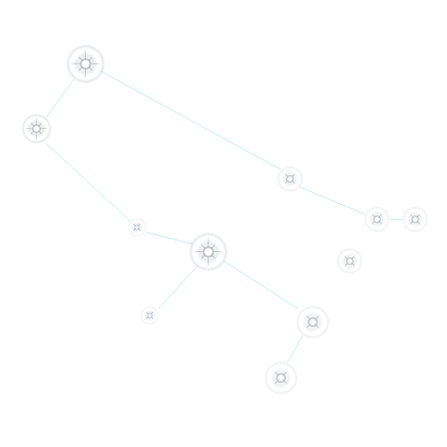
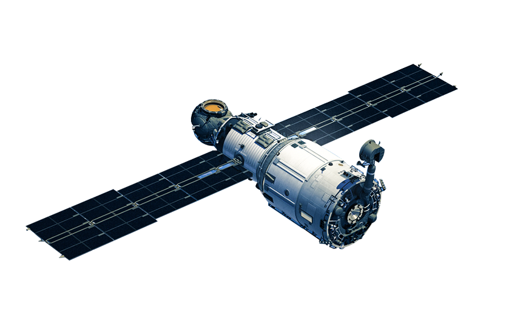
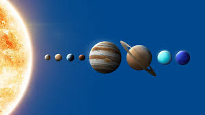
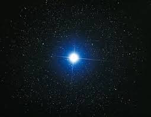
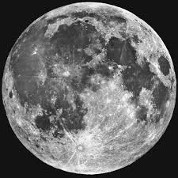
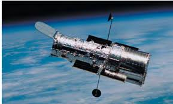
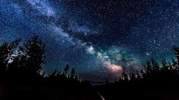

Gelexy
Знайди будь-яку зірку
Зірки ближче, ніж ви думаєте
Найближча зірка до Землі - Проксима Центавра
Що можна побачити на небі?
Тут ти дізнаєшся про
-

Сузір'я
Найбільшим сузір'ям вважається Гідра, що займає близько 3% видимого простору на небі.
-

Планети
Планета Юпітер – найбільша планета, перевищує масу Землі приблизно в 318 разів.
-

Астероїди
Астероїди складаються з кам'янистих порід
-

Зірки
Найхолодніші зірки – червоні, найгарячіші – блакитні.
-

Супутники
Допомагають у боротьбі з озоновими дірами
-

Місяць
По поверхні Місяця ходило лише 12 чоловік і всі вони американці.
Деякі планети можна побачити неозброєним оком
Неозброєним оком із Землі можна побачити п'ять планет: Меркурій, Венеру, Марс, Юпітер та Сатурн
Астрономічні новини
Дізнавайся, що відбувається у космосі прямо зараз
-
Астероїд 2024-YR4 летить на Землю та інші небезпечні астероїди
31.01.2025
-

Парад планет
28.01.2025
-

Найяскравіша зірка. Що це за планета?
01.02.2025
-

Повний місяць, коли і де можна побачити
01.02.2025
-

Супутники
01.02.2025
-

Дізнайся, що відбувається на небі зараз
02.02.2025